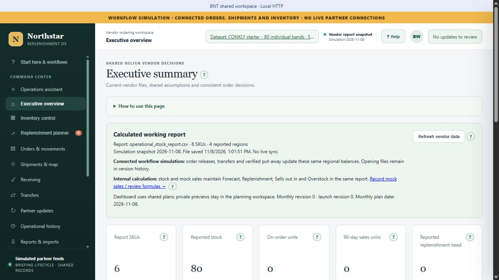

Understand & plan
Open screen at full size ↗
Read the executive overview

This screen could not load. Use the full-size link or choose another screen.
The whole operating workflow
Explore six chapters covering the complete app. Follow the steps in order or jump to an area. Key decisions and the AI operations assistant receive a closer look; supporting tools have their own stops.
Current BNT app · November 8, 2026
6 products · 80 in stock · 0 on order

This screen could not load. Use the full-size link or choose another screen.
Every current navigation area is covered. Older purchase-order, transfer, receiving, automation, audit, and sync entries that redirect into the connected workspace are shown at their current destinations.
Every screenshot was captured directly from the running BNT app on November 8, 2026, using the CONKLY starter workspace shown in Brian’s reference. It contains six products, 80 units in stock, and zero on order. The original 80-unit request and completed timeline are retained; no separate generated operating dataset is substituted.
The question interface reports the assistant available, but no AI message was sent for capture. Local planning and dataset previews were not saved. No order was approved, no receipt or put-away repeated, and no notification sent. Planning and connection panels are cropped to exclude private notification contacts. The final chapter shows the current app’s separately labeled legacy network examples, not operational evidence from the CONKLY workspace.